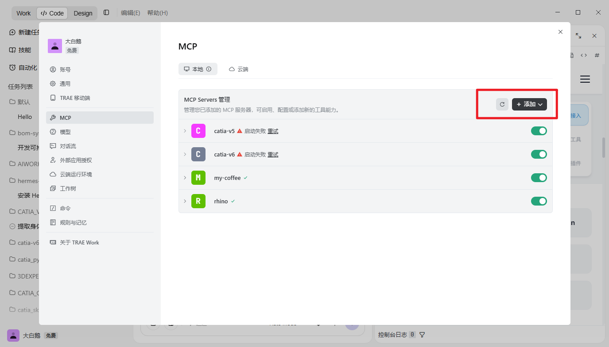
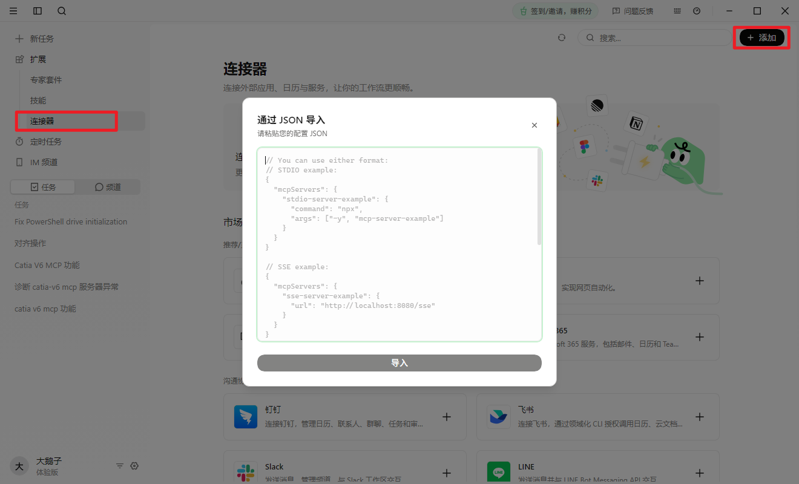
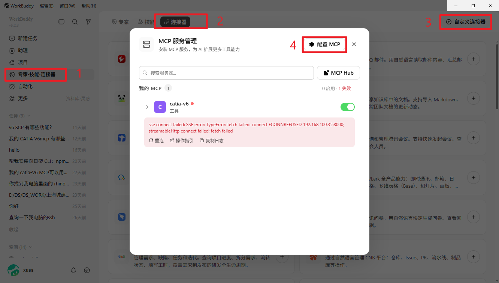

基于标准 MCP 协议，让 AI 助手直接操控 CATIA V5 与 3DEXPERIENCE 平台。
自然语言建模、自动化出图、智能 PLM 查询——一句话即可完成,虽然目前AI在生成图纸或者纯建模领域与实际工程还有很长的一段距离，但是这条技术发展的路线不会终结，AI在
编程工程项目领域已经有了很大的发展，相信随机各种大模型持续的完善推进，未来会越来越智能化，从现在开始就应该要对此进行持续投入研究。
覆盖零件建模、装配体、工程图、PLM 数据查询全链路，让 AI 成为您的工程助手
自然语言描述零件参数，AI 自动调用 CATIA API 创建特征——拉伸、旋转、打孔、倒角，一句话生成 Part。
自动插入零部件、施加约束（贴合/对齐/偏移）、生成 BOM 表。AI 理解装配关系，一键组装。
从 3D 模型自动生成三视图、剖视图、局部放大图，标注尺寸与公差。支持 CATDrawing 格式导出。
自然语言搜索 3DEXPERIENCE 数据库——查找零件、对比版本、追踪变更历史、生成合规报告。
支持 MCP 协议、CLI 命令行、Skill 插件三种接入方式，灵活适配不同开发场景
本地启动 CATIA V5 MCP Server，自动连接正在运行的 CATIA 会话
workbuddy / trae / qoderwork
打开 CATIA，用自然语言描述设计意图，AI 自动执行建模操作
{
"mcpServers": {
"catia-v5": {
"command": "python",
"args": ["-m", "catia_v5_mcp.server"],
"env": {
"CATIA_HOST": "localhost",
"CATIA_PORT": "8099"
}
}
}
}{
"mcpServers": {
"3dexperience": {
"command": "python",
"args": ["-m", "3dexperience_mcp.server"],
"env": {
"3DS_URL": "https://3ds.example.com",
"3DS_TOKEN": "<YOUR_3DS_TOKEN>"
}
}
}
}PowerShell 一键安装脚本，支持 V5 / V6 多个版本，像CAA开发的运行包，可以通过Agent的工具自动在后台批量调用
选择对应版本执行，脚本自动完成环境配置，大语言模型会根据当前的环境变量，智能化的提示，你应该传入哪些参数，传入参数之后，它会自适应地填入相关位置，
安装后即可在终端使用 catia-cli 命令执行建模操作，可以在Agent内通过语音与它聊天调用相关命令，它可以在后台自动执行一些集成化的工具
# V6 (3DEXPERIENCE)
iex(irm https://gitee.com/xuscode1/catia-v6r2025-cli/raw/master/www/install-cli.ps1)
iex(irm https://gitee.com/xuscode1/catia-v6r2026-cli/raw/master/www/install-cli.ps1)
# V5 (CATIA)
iex(irm https://gitee.com/xuscode1/catia-v5r27-cli/raw/master/www/install-cli.ps1)
iex(irm https://gitee.com/xuscode1/catia-v5r29-cli/raw/master/www/install-cli.ps1)
iex(irm https://gitee.com/xuscode1/catia-v5r36-cli/raw/master/www/install-cli.ps1)让 agent 归纳总结你们的工作流,把大量的 CLI 程序或者是 MCP 命令串联起来，形成一整套工作流,减少人工干预，提高工作效率,
SKILL可以让工程师可以灵活地参与项目的各个阶段
下载后，在技能中点击添加技能，把下载的文件导入
下载并解压后，在 Skill 中点击 Add skill，选择解压目录
解压到 ~/.claude/skills/my-coffee
解压到 ~/.codex/skills/my-coffee
下载并解压后，在 Qoder 的 Skills 中导入解压目录
下载并解压后，在 Kimi Code 的 Skills 中导入解压目录
下载后，在技能中点击添加技能导入
下载并解压后导入 Skill 目录
下载并解压后导入 Skill 目录
请下载安装 My CATIA-Automation Skill：
https://ds-ai.com/my-Automation-skill.zip
MCP 协议标准开放，CATIA 插件已接入多款 AI 开发工具，开箱即用



在Agent内，使用日常语言描述设计意图，Agent 会根据您的需求自动找到所对应的命令行，执行 CATIA 操作
创建一个直径 50mm、长度 100mm 的圆柱体，在一端打 M8 螺纹孔，深度 20mm
把 flange.CATPart 和 pipe.CATPart 装配起来，法兰面贴合，螺栓孔对齐
把当前 Part 的所有 M6 孔改为 M8，壁厚从 3mm 改成 5mm
给当前 Part 生成三视图 + 等轴测视图，标注关键尺寸，导出为 PDF
查找 project_nuobo 下所有状态为 Released 的钣金零件，列出材料与版本
把 assemblies/ 目录下所有 CATProduct 导出为 STEP 格式，放到 exports/ 目录
标准 MCP 协议作为中间层，将 AI 的自然语言能力与 CATIA/3DEXPERIENCE 的专业能力无缝对接